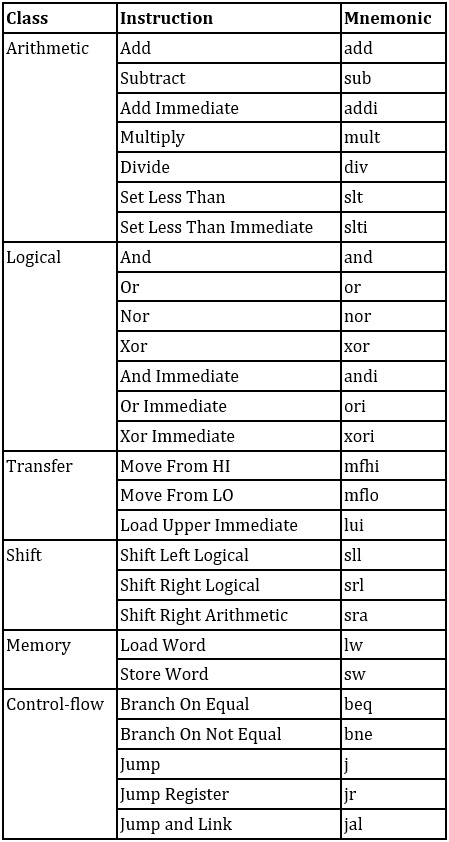

Group project for a computer architecture class.
The processor has five stages (IF, ID, EX, MEM, WB) and was designed in VHDL. It supports branch prediction (1-bit or 2-bit), forwarding, and hazard detection.
The table on the right shows all the MIPS instructions implemented.